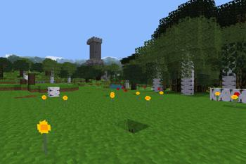
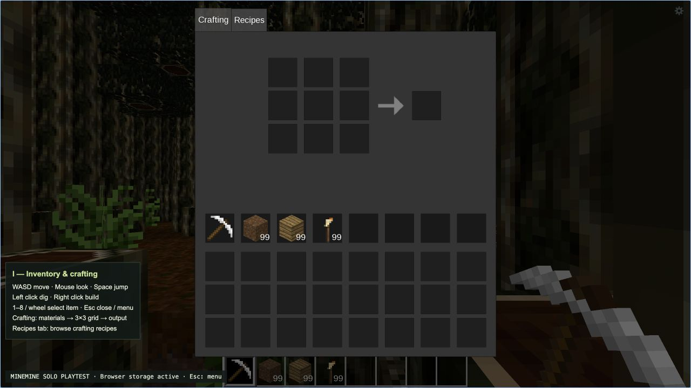
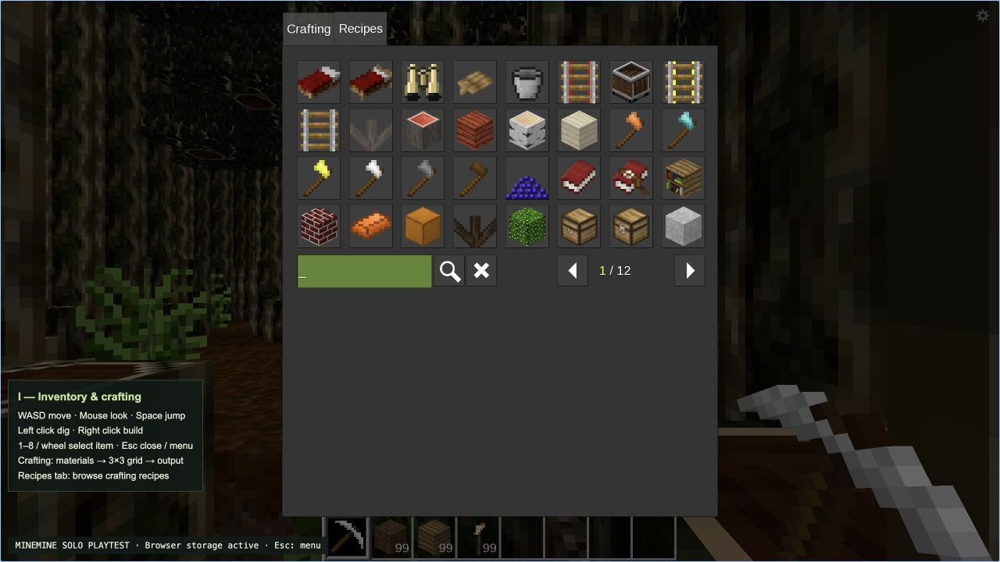

Explore and craft
Walk a generated landscape, gather blocks, place your creations, and use a real crafting inventory. The first solo world runs directly in a supported browser.
Try the playtest ↗A VOXEL WORLD IN YOUR BROWSER 001
Mine, craft, wander, and build in a real Luanti world. The solo browser playtest is live. A persistent shared world, wallet identities, and player towns are taking shape.
SOLO PLAYTEST LIVE / DESKTOP CHROMIUM RECOMMENDED

01 / A REAL WORLD, ALREADY PLAYABLE
MineMine runs a compiled Luanti engine and Minetest Game in the browser. Your solo world saves on this device, so you can come back to what you built. See the source game and our running browser playtest below.


Minetest Game CC BY-SA 3.0 screenshot and actual browser playtest captures. Solo mode is available now; shared multiplayer and on-chain features are in development.
02 / THE WORLD WE'RE BUILDING
Each system has a clear job: a world worth returning to, an identity you control, and a reason to build with other people.
Walk a generated landscape, gather blocks, place your creations, and use a real crafting inventory. The first solo world runs directly in a supported browser.
Try the playtest ↗Meet other builders on a persistent server. The browser network bridge and native server are the next integration milestone; large scale world work will follow with SpacetimeDB.
Sign in by signing a message with an Ethereum browser wallet. The server ties a stable character to your address. ENS names can make that address feel like yours.
MINE is an ERC-20 test token. Players will send it directly from their wallets, and verified payments will support town land protection. No token is deployed publicly yet.
03 / BUILD LOG
We show the milestones as they really stand. The solo playtest is live; a public multiplayer launch needs a dedicated host, a secure browser transport, and end-to-end testing.
Read the full roadmap ↗Real Luanti engine, mining, placement, inventory, crafting, and local save.
Signed login foundation; finish wallet-to-character game integration and ENS.
Native server, restricted browser bridge, backups, and remote player tests.
Testnet MINE transfers, verified land payments, and protected towns.
Explore SpacetimeDB for larger populations in a single world.
04 / WALLET LAB
Try the wallet sign-in foundation and testnet tools. A wallet signature proves account ownership; it does not spend funds. Multiplayer character entry remains disabled until the server is ready.
Sign a message to create a session. No password or transaction is needed to sign in.
The solo playtest is ready. Shared multiplayer is in development.
—MINE
Token contract not deployed.
Direct transfers are available when a testnet token is configured.
LAND CREDITS / TESTNET
Buy protected land columns with MINE. A verified wallet purchase raises your town claim limit. Town creation and protection activate with the shared server.
— land columns purchased
Town payment contract not deployed.
Only chain confirmed purchases become claimable.
YOUR NEXT ADVENTURE IS ONE CLICK AWAY
Free solo browser playtest · No wallet required